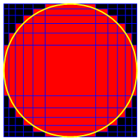

A rectilinear grid is an orthogonal grid where the spacing between the gridlines does not have to be equidistant.
An example of such grid is logarithmic graph paper.
Consider rectilinear grids in the Cartesian coordinate system with the following properties:
E.g. here is a picture of the solution for $N = 10$:

The area occupied by the red cells for $N = 10$ rounded to $10$ digits behind the decimal point is $3.3469640797$.
Find the positions for $N = 400$.
Give as your answer the area occupied by the red cells rounded to $10$ digits behind the decimal point.
solve(N=10) → █solve(N=400) → █Solution pending... the mathematician is still thinking.
Nothing here yet - come back when the dust has settled.